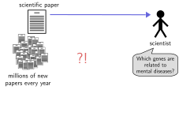
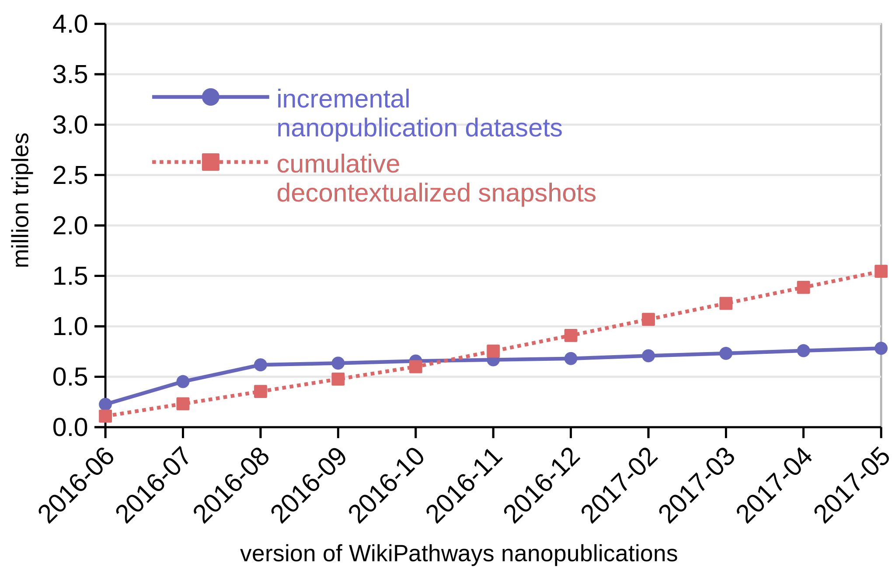
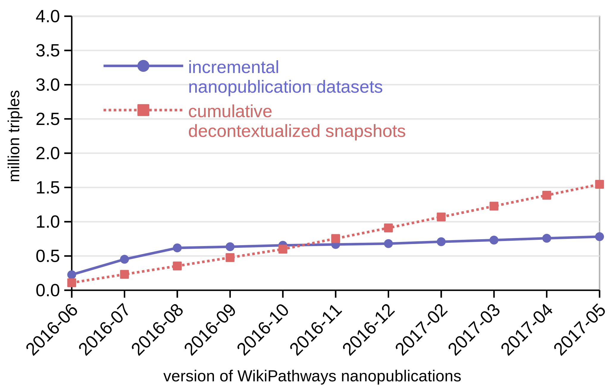
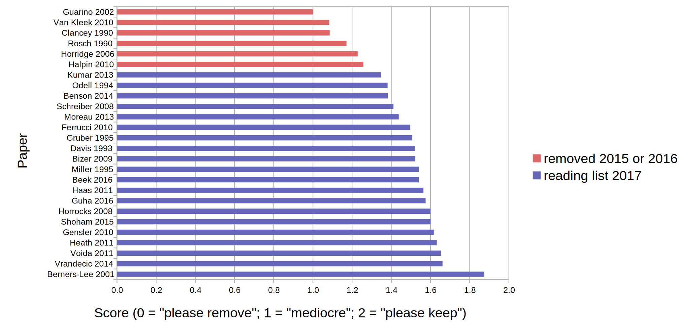

Global Knowledge Communication
and How to Make it Efficient and Reliable
Tenure Interview of Tobias Kuhn
VU Amsterdam, 8 March 2019
Global Knowledge Communication Crisis

Global Knowledge Communication Crisis
Global Knowledge Communication Crisis

My Research on Global Knowledge Communication
Communication Methods:
- Nanopublications and FAIR
- Expressive Controlled Natural Languages
Communication Content:
- Controversy and Bias
- Knowledge Networks
Background: Nanopublications

Nanopublication: Simplified Example

Nanopublication: Real Example

http://purl.org/np/RAzquSkwsTAZm61nReG6MOjXEXUx8fNVfdWnAzyn6sOhU
Trusty URIs make nanopublications ...

Research Highlights: Nanopublications, Semantic Publishing, and FAIR
Scholarly communication methods for the digital age:
- Trusty Publishing with a Decentralized Server Network
- Evolving Datasets with Reliable Incremental Versioning
- Uniform Cross-Dataset Data Handling
- Linked Data for Web Developers and End Users
- FAIR Principles
- Genuine Semantic Publishing
Trusty Publishing: Server Network with >10M Nanopublications is Fast and Reliable


Tobias Kuhn, et al. Decentralized provenance-aware publishing with nanopublications. PeerJ Computer Science, 2:e78, 2016.
Nanopublication Overhead Disappears and Turns Into Advantage for Evolving Datasets
 

Tobias Kuhn, et al. Reliable Granular References to Changing Linked Data. In Proceedings of ISWC 2017. Springer, 2017.
Nanopublications as Standardized Data Containers
Reliable and uniform handling across datasets,
for example to analyze vocabulary use or type distribution:

Tobias Kuhn, et al. Nanopublications: A Growing Resource of Provenance-Centric Scientific Linked Data. In Proceedings of IEEE eScience 2018.
Making Linked Data Easy to Use for Web Developers and End Users
➟
Typical task and results for experts (E1) and students (E2):
- Task 4: Linking and thereby including an existing FOAF profile as article

Niels Ockeloen, Victor de Boer, Tobias Kuhn, and Guus Schreiber. Data 2 Documents: Modular and Distributive Content Management in RDF. In EKAW 2016. Springer, 2016. Best paper award.

- Adoption by major funders and publishers
- More than 1000 citations in three years
Mark D Wilkinson, ..., Tobias Kuhn, et al. The FAIR Guiding Principles for scientific data management and stewardship. Scientific Data, 3:16001, 2016.
Vision for Future Work:
Genuine Semantic Publishing

Tobias Kuhn and Michel Dumontier. Genuine semantic publishing. Data Science, 1(1-2), 2017.
Research Highlights: Expressive Controlled Natural Languages
Intuitive languages to communicate complex issues:
- AIDA
- Thing Explainer
AIDA Sentences: Atomic, Independent, Declarative, Absolute
Students found AIDA sentences for papers helpful:

Tobias Kuhn. Using the AIDA Language to Formally Organize Scientific Claims. In Proceedings of CNL 2018. IOS Press, 2018. Best paper candidate
Thing Explainer Language: Use Only 1000 Most Used English Words
Not quite as simple as advocated:

Tobias Kuhn. The Controlled Natural Language of Randall Munroe's Thing Explainer. In Proceedings CNL 2016. Springer, 2016.
Research Highlights:
Controversy and Bias
- CAPOTE Controversy Model
- Bias in International Video News
CAPOTE Controversy Model

Validated by crowdsourced regression analysis:

Benjamin Timmermans, Tobias Kuhn, Kaspar Beelen, Lora Aroyo. Computational Controversy. In Proceedings of Socinfo2017. Springer, 2017.
Bias in International Video News
Preliminary results:
Research Highlights:
Knowledge Networks
Social Networks from Literature / Linked Open Data Networks:

Dekker et al. Evaluating social network extraction .... PeerJ, to appear. Noteworthy article invited for press release by publisher. / Mangaladevi et al. Understanding Knowledge Networks. In LD4IE 2017.
Research Summary 2015–now
- 1809 citations
- 18 peer-reviewed articles (8 as first author)
- 1 best paper award at conference
- 1 best paper candidate at workshop
- 1 "noteworthy article" with press release at journal
Personal Research Grant Proposals (unsuccessful)
NWO (A+/A/B/UF/U scale):
- Vidi 2016: A+, A+, A
- Top Grant (module 2) 2017: A, A
- Vidi 2017: A+, A, A
- Top Grant (module 2) 2018: A+, A, UF
ERC Starting Grant 2016: Very Good (5), Excellent (6), Outstanding (1)
Education Highlights
- Master course Knowledge and Media
- Bachelor course Information Retrieval
- Master/Bachelor project supervisor of 30 students
Master course Knowledge and Media
- Complete Redesign of Content and Structure
- Assessment: Flash Presentations, Posters, Overview and Focus Papers
- Good student evaluations

Reading Literature Can be Fun Too
I ask students every year which papers on the reading list they liked and which not:
Bachelor Course Information Retrieval
- Based on Classic Textbook by Manning et al.
- Assessment: Six IPython Notebook Based Assignments and Multiple-Choice Exam
- Good student evaluations
Video Recordings: Never Again Without
I started to record all my lectures for both courses.
"Were the video recordings helpful?":
- Knowledge and Media: 4.68 / 5.00
- Information Retrieval: 4.95 / 5.00
Master/Bachelor project supervision
- 30 Master/Bachelor students supervised
- All completed successfully
- No major delays (all finished in August the latest)
Management Highlights
- Main PI of Capturing Bias Project (NWO VWdata)
- Co-PI of FAIR Workflows Project (NWO JEDS)
- Supervisor of 3 Postdocs and 4 PhD Students
- Master IS Project Coordinator
- Exam Committee Member
- Education Committee Member of BSc/MSc AI
- Editor-in-Chief of Journal Data Science at IOS Press